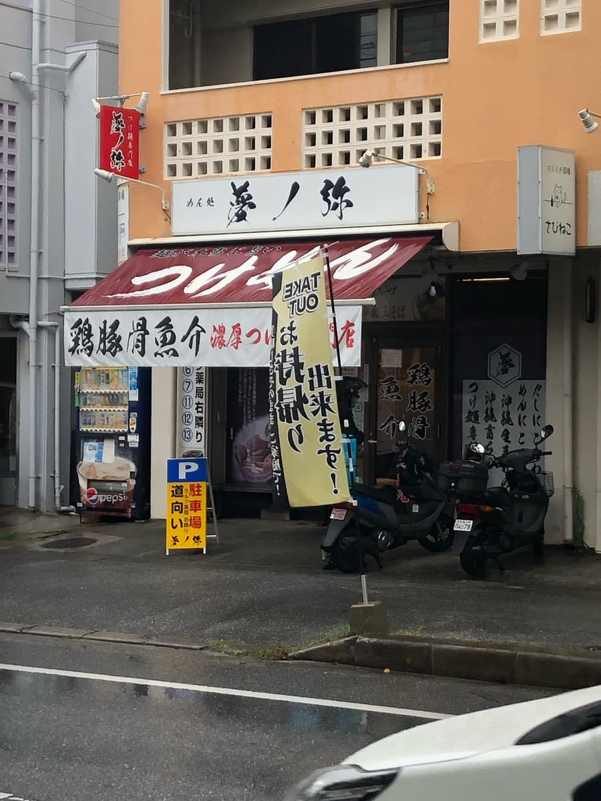
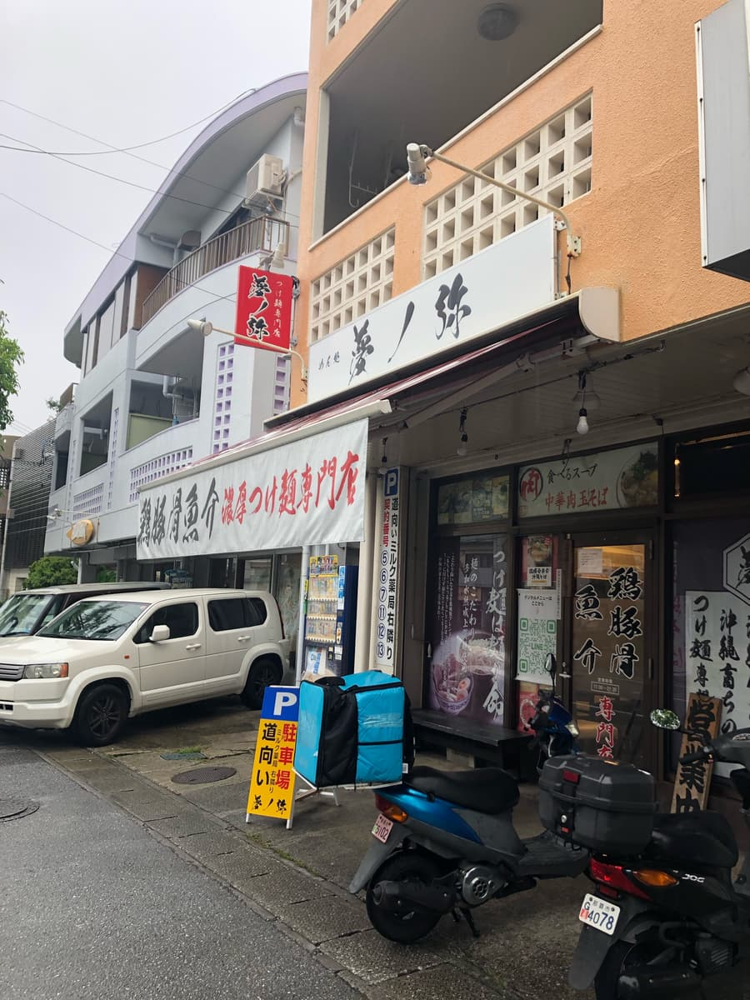
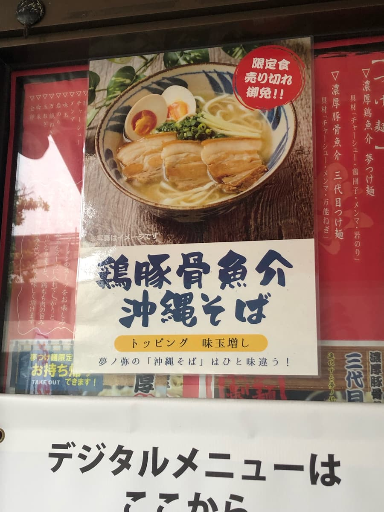
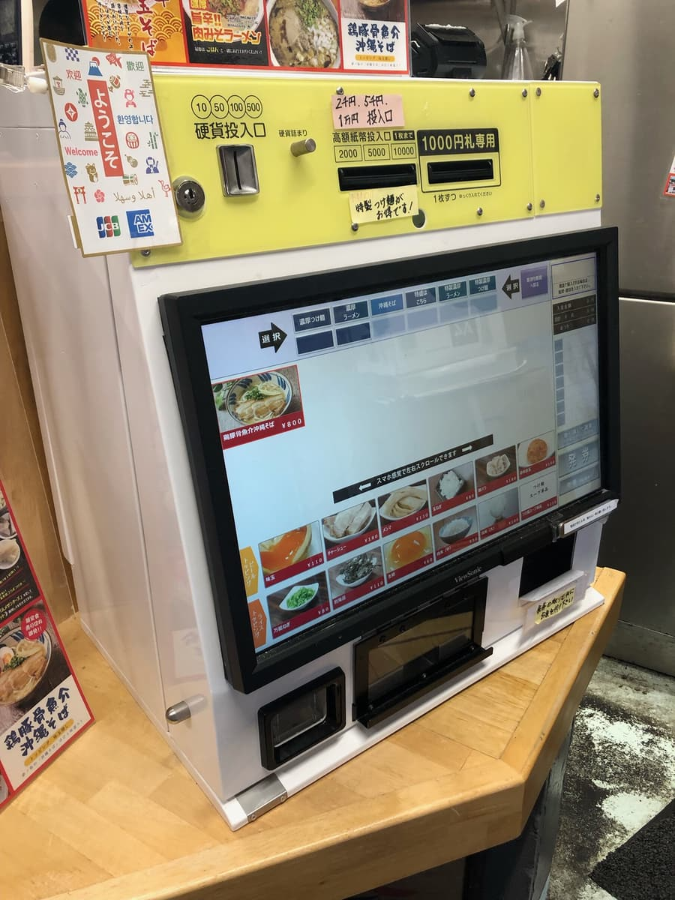
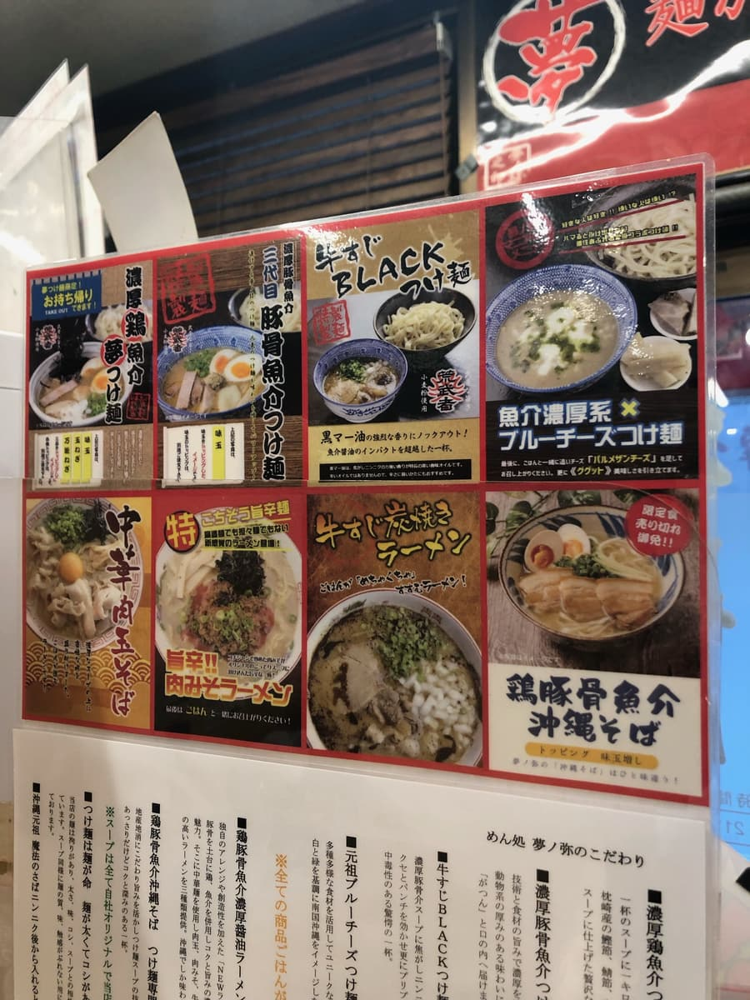
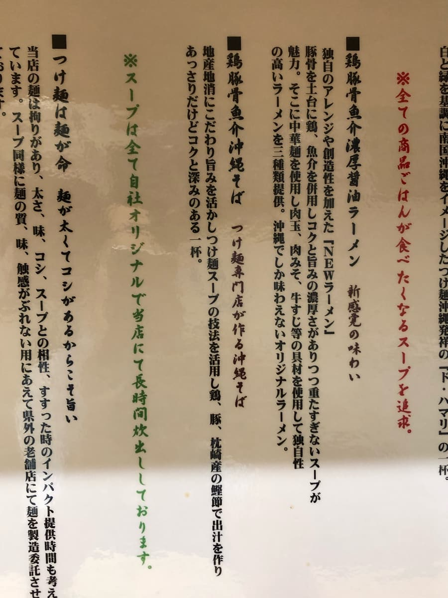
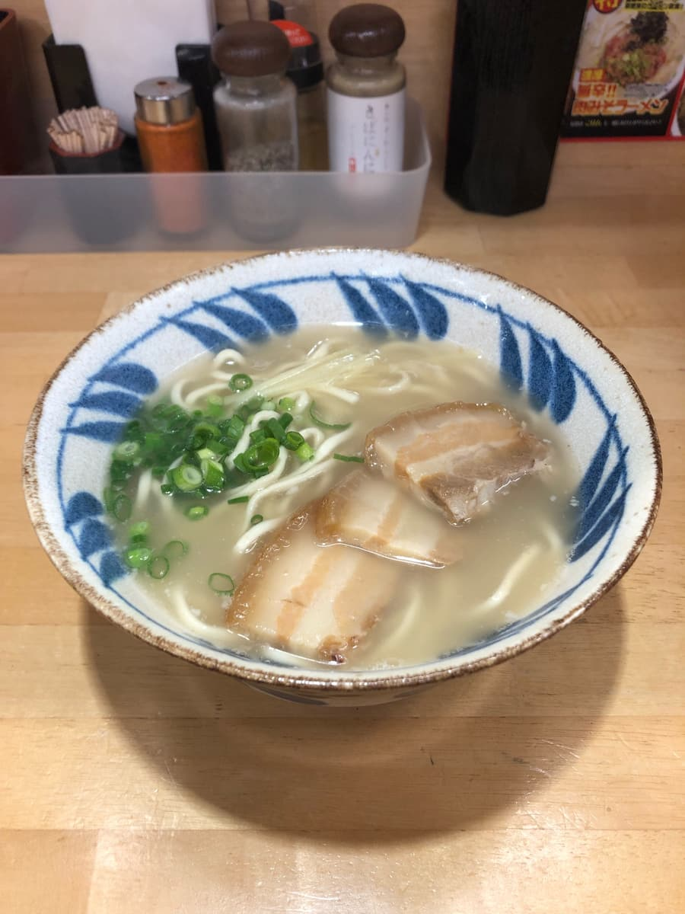
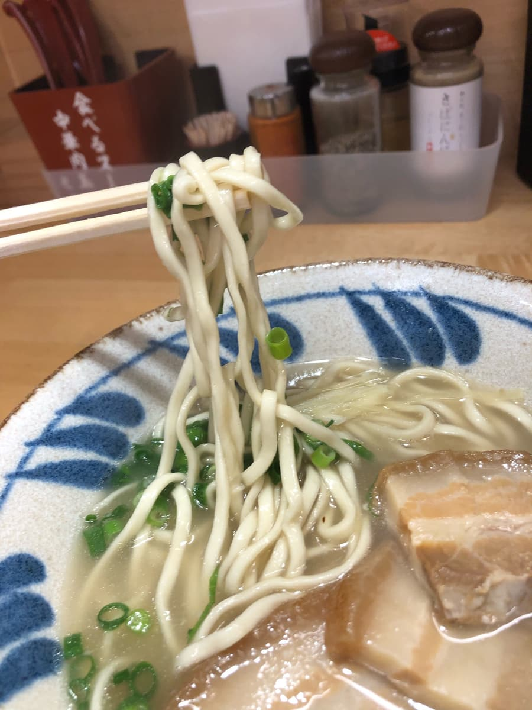

2024年4月吃的😄每次开车经过国道330号都会看到显眼的看板，一直很在意，终于去了😆

这是浓厚沾面专卖店做的「冲绳面」😁 光这样是不是就觉得很好吃呢？笑 而且还是每日限定30碗！让人期待满满。



走进店内，眼前就是售票机。虽然是沾面专卖店，但我的目标只有「冲绳面」，所以点了「鸡骨猪骨海鲜冲绳面」。而且支援无现金支付真是太棒了👍 我用可以累积乐天点数的乐天Pay付款😆


也有面的说明。令人期待满满呢😄

沾面专卖店做的冲绳面来了😁首先是汤头呢。
猪骨味明显的汤，没有腥味，很清爽。我觉得跟其他店的猪骨汤不一样。很好吃😄

接着吃面。是细面直面呢。感觉软软的，是普通的好吃。配料的三层肉软嫩酥烂，没有筋感（口感偏韧），很好吃，让我觉得还想再多吃一点😆
评分（10分/15分）：汤是其他店没有的猪骨为底的汤，配料的三层肉也很好吃。因为是沾面专卖店做的冲绳面，也许是我把门槛擡得太高了，不过很好吃，我认为只差一步就是推荐等级。
面：★★★☆☆（3）
汤头：★★★✬☆（3.5）
配料：★★★✬☆（3.5）